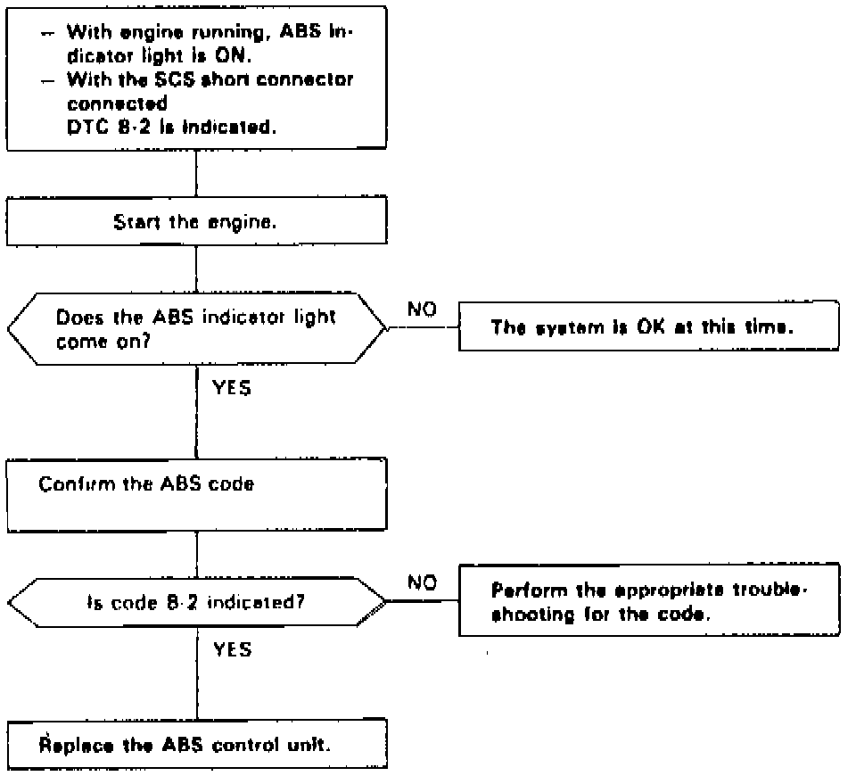

DTC 8-2
Fig. 45 Code 8-2: CPU Comparison Diagnosis:

Diagnostic Trouble Code (DTC) 8-2: CPU Comparison Diagnosis
The ABS control unit checks the data of the two CPUs by comparison, and it keeps the ABS indicator light on if there are any differences in the data between the CPUs. It turns the ABS indicator light on again if it detects any difference after the light goes off.